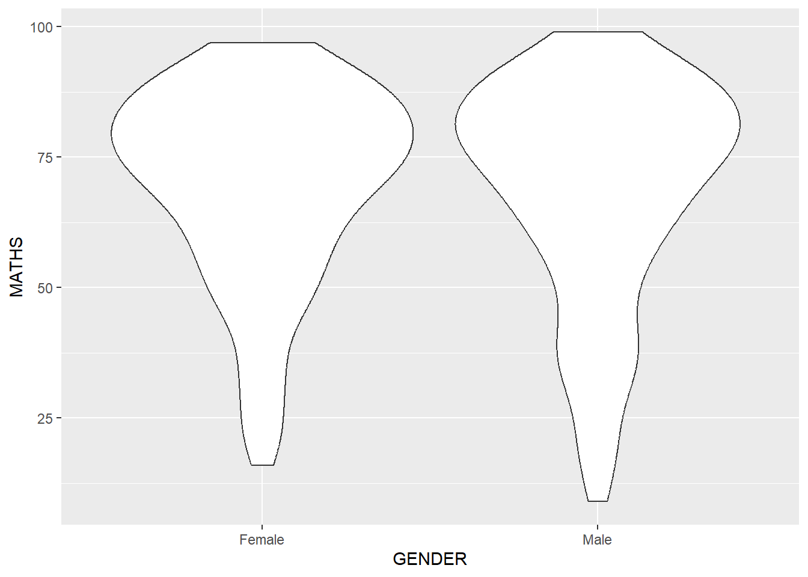
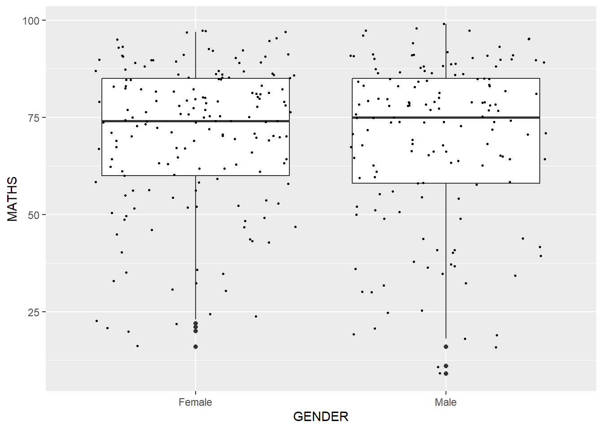

pacman::p_load(tidyverse)Hands-on Exercise 1
1 A Layered Grammar of Graphics: ggplot2 Methods
1.1 Overview and Learning Outcomes
This hands-on exercise is based on Chapter 1 of the R for Visual Analytics book.
The learning outcomes are:
Learn the basic principles and essential components of ggplot2;
Gain hands-on experience on using ggplot2 components to plot statistical graphics based on the principle of Layered Grammar of Graphics; and
Apply the essential graphical elements provided by ggplot2 to create elegant yet functional statistical graphics.
1.2 Getting Started
1.2.1 Installing and Loading Required Libraries
The code chunk below uses the p_load() function in the pacman package to check if the tidyverse packages are installed in the computer. If yes, they are then loaded into the R environment. If no, they are installed, then loaded into the R environment.
1.2.2 Importing Data
The dataset for this hands-on exercise is imported into the R environment using the read_csv() function in the readr package and stored as the R object, exam_data.
exam_data = read_csv("data/Exam_data.csv")The tibble data frame, exam_data, has 7 columns and 322 rows.
It consists of the year-end examination grades of a cohort of 322 Primary 3 students from a local school.
The 7 variables/attributes are:
Categorical: ID, CLASS, GENDER, and RACE.
Continuous: MATHS, ENGLISH, and SCIENCE.
1.3 Introducing ggplot
The ggplot2 package is an R package for declaratively creating data-driven graphics based on The Grammar of Graphics.
It is part of the tidyverse family of packages, and is specially designed for visual exploration and communication.
1.3.1 R Graphics versus ggplot
R Graphics is the core graphical functions in Base R. A comparison is made between R Graphics and ggplot by plotting a simple histogram.
hist(exam_data$MATHS)
ggplot(data=exam_data, aes(x = MATHS)) +
geom_histogram(bins=10,
boundary = 100,
color="black",
fill="grey") +
ggtitle("Distribution of Maths scores")
In the above example, a relatively simple code chunk is used for R Graphics, while more details are added via ggplot2.
So why use ggplot2? According to the creator of tidyverse, Hadley Wickham:
“The transferable skills from ggplot2 are not the idiosyncrasies of plotting syntax, but a powerful way of thinking about visualisation, as a way of mapping between variables and the visual properties of geometric objects that you can perceive.”
1.4 Grammar of Graphics
It is important to understand the principles of the Grammar of Graphics.
The Grammar of Graphics is a general scheme for data visualisation which breaks up graphs into semantic components such as scales and layers. It was introduced by Leland Wilkinson (1999) through the book - The Grammar of Graphics, published by Springer. It is an answer to a question:
What is a statistical graphic?
In the nutshell, the Grammar of Graphics defines the rules of structuring mathematical and aesthetic elements into a meaningful graph.
There are two principles in the Grammar of Graphics:
Graphics is made up of distinct layers of grammatical elements.
Meaningful plots is achieved through aesthetic mapping.
So why is it important to have a good grasp of the grammar of graphics?
Allows us to gain insights into the composition of complicated graphics, and reveal unexpected connections between seemingly different graphics (Cox, 1978).
Provides a strong foundation for understanding a diverse range of graphics.
Impart better understanding of what well-formed or correct graphics could look like (although there will still be many grammatically correct but nonsensical graphics).
1.4.1 A Layered Grammar of Graphics
The seven grammars of ggplot2 are:
Data: The dataset being plotted.
Aesthetics take attributes of the data and use them to influence visual characteristics, e.g., position, colours, size, shape, transparency.
Geometrics: The visual elements used for the data, e.g., point, bar, line.
Facets split the data into subsets to create multiple variations of the same graph, e.g., paneling, multiple plots.
Statistics refer to statistical transformations that summarise data e.g., mean, confidence intervals.
Coordinates refer to coordinate systems that define the plane on which data are mapped on the graphic.
Themes modify all non-data components of a plot, e.g., main title, sub-title, y-aixs title, legend, background.
1.5 Essential Grammatical Elements in ggplot2: data
The ggplot() function in the ggplot2 package is used to initiate a ggplot object. The “data” argument defines the dataset to be used for plotting the graphic.
If the dataset is not already a data frame, it will be converted to one via the fortify() function in the ggplot2 package.
ggplot(data=exam_data)
1.6 Essential Grammatical Elements in ggplot2: aesthetic mappings
Aesthetic mappings take attributes of the data and and use them to influence visual characteristics, e.g., position, colour, size, shape, or transparency. Each visual characteristic can thus encode an aspect of the data and be used to convey information.
All aesthetics of a plot are specified in the aes() function. Each geom layer can have its own aesthetic specification.
The code chunk below adds the aesthetic element into the plot. The x-axis and its label are added to the plot.
ggplot(data = exam_data,
aes(x = MATHS))
1.7 Essential Grammatical Elements in ggplot2: geom
The geometric objects are the actual marks put on the plot. A plot must have at least one geom, but may have more.
Some examples of geom:
geom_point()for drawing individual points (e.g., a scatter plot);geom_line()for drawing lines (e.g., for a line chart);geom_smooth()for drawing smoothed lines (e.g., for simple trends or approximations);geom_bar()for drawing bars (e.g., for bar chart);geom_histogram()for drawing binned values (e.g. a histogram);geom_polygon()for drawing arbitrary shapes; andgeom_map()for drawing polygons in the shape of a map. Can use the map_data() function to access the data used for these maps.
1.7.1 Geometric Objects: geom_bar()
A bar chat is plotted using the geom_bar() function.
ggplot(data = exam_data,
aes(x = RACE)) +
geom_bar()
Observation: From the bar chart, we can see that most of the students are Chinese, followed by Malay. A minority of students are Indian or other races.
1.7.2 Geometric Objects: geom_dotplot()
In a dot plot, the width of a dot corresponds to the bin width (or maximum width, depending on the binning algorithm), and the dots are stacked, with each dot representing one observation.
A dot plot is plotted using the geom_dotplot() function.
ggplot(data = exam_data,
aes(x = MATHS)) +
geom_dotplot(dotsize = 0.5)
The y-axis for the plot above is misleading. Hence, the scale_y_continuous() function in the ggplot2 package is used to turn off the y-axis. Also, the “binwidth” argument is used to change the bin width to 2.5.
ggplot(data = exam_data,
aes(x = MATHS)) +
geom_dotplot(binwidth=2.5,
dotsize = 0.5) +
scale_y_continuous(NULL,
breaks = NULL)
Observation: From the dot plot, we can see that the maths scores are left-skewed, with more students scoring above 50 than below 50.
1.7.3 Geometric Objects: geom_histogram()
The geom_histogram() function is used to create a simple histogram using the values in the “MATHS” attribute of the data set.
ggplot(data = exam_data,
aes(x = MATHS)) +
geom_histogram() 
Observation: From the histogram, we can see that the maths scores are left-skewed, with more students scoring above 50 than below 50.
1.7.4 Modifying A Geometric Object by Changing geom()
Some customisations are done to the histogram:
The “bins” argument is used to change the number of bins from the default 30 to 20;
The “fill” argument is used to fill the bars with light blue; and
The “colour” argument is used to change the outline of the bars to black.
ggplot(data = exam_data,
aes(x = MATHS)) +
geom_histogram(bins = 20,
colour = "black",
fill = "light blue")
Observation: From the histogram, we can see that the maths scores are left-skewed, with more students scoring above 50 than below 50. Also, we can also see more clearly that the score range with the most students is around 75.
1.7.5 Modifying A Geometric Object by Changing aes()
The fill of the histogram is changed using the sub-group of the aesthetic() function, which divides the bars by the “GENDER” attribute.
ggplot(data = exam_data,
aes(x = MATHS,
fill = GENDER)) +
geom_histogram(bins = 20,
color = "grey30")
Observation: From the histogram, we can see the distributions of math scores for female and male students. There appears to be less female students who score below 50 compared to male students who score below 50.
1.7.6 Geometric Objects: geom_density()
The geom_density() function is used to compute and plot the kernel density estimate, which is a smoothed version of a histogram. It is a useful alternative to the histogram for continuous data that comes from an underlying smooth distribution.
ggplot(data = exam_data,
aes(x = MATHS)) +
geom_density() 
Observation: From the kernel density estimate plot, we can see the most ‘dense’/common score is actually slightly above 75.
The kernel density estimate is then plotted by the “GENDER” attribute using the “colour” argument.
ggplot(data = exam_data,
aes(x = MATHS,
colour = GENDER)) +
geom_density()
Observation: From the kernel density estimate plot, we can see more clearly that there are more female students than male students who score above 50. Conversely, there are more male students than female students who score below 50.
A similar plot can be produced using the “fill” argument.
ggplot(data = exam_data,
aes(x = MATHS,
fill = GENDER,
alpha = 0.1)) +
geom_density()1.7.7 Geometric Objects: geom_boxplot()
The geom_boxplot() function is used to display a continuous value list. It visualises five summary statistics (minimum, first quartile, median, third quartile, and maximum) and any outliers.
ggplot(data = exam_data,
aes(y = MATHS,
x= GENDER)) +
geom_boxplot()
Observation: From the boxplot, we can see that the median scores for female students and male students are rather similar. There are also outliers for both genders in the lower score range.
The “notch” argument is used to help visually assess whether the median of distributions differ. If the notches do not overlap, it means that the medians are different.
ggplot(data = exam_data,
aes(y = MATHS,
x = GENDER)) +
geom_boxplot(notch = TRUE)
Observation: From the notched plot, we can see clearly that the median scores for female students and male students are different.
1.7.8 Geometric Objects: geom_violin()
The geom_violin() function is designed for creating a violin plot. Violin plots are a way of comparing multiple data distributions. With ordinary density curves, it is difficult to compare more than just a few distributions because the lines visually interfere with each other. With a violin plot, it’s easier to compare several distributions since they are placed side by side.
ggplot(data = exam_data,
aes(y = MATHS,
x = GENDER)) +
geom_violin()
Observation: From the violin plot, we can see clearly that the distribution of the scores by gender is relatively similarly. A key difference is that the lower scores in the distribution for male students are lower than that for female students.
1.7.9 Geometric Objects: geom_point()
The geom_point() function is used to create a scatterplot. The “MATHS” and “ENGLISH” attributes of the dataset are plotted.
ggplot(data = exam_data,
aes(x = MATHS,
y = ENGLISH)) +
geom_point() 
Observation: From the scatterplot, we can see that there appears to be a positive correlation between English and Maths scores, i.e., students with higher English scores also tend to have higher Maths scores.
1.7.10 Combine Geometric Objects
The code chunk below plots the data points on boxplots and scatterplots using both the geom_boxplot() and geom_point() functions.
ggplot(data = exam_data,
aes(y = MATHS,
x = GENDER)) +
geom_boxplot() +
geom_point(position = "jitter",
size = 0.5)
Note: The “position” argument is used to randomly vary the location of the dots, which otherwise would have lined up in the middle of the boxplot.
1.8 Essential Grammatical Elements in ggplot2: stat
The statistics functions statistically transform data, usually into some form of summary - e.g., mean, confidence limit.
There are two ways to use these functions:
Add a stat() function and override the default geom, or
Add a geom() function and override the default stat.
1.8.1 Working with stat()
The boxplots below are incomplete because the positions of the means were not shown.
ggplot(data = exam_data,
aes(y = MATHS,
x= GENDER)) +
geom_boxplot()
1.8.2 Working with stat - stat_summary() method
The mean values are added using the stat_summary() function in the ggplot2 package. This overrides the default geom.
ggplot(data = exam_data,
aes(y = MATHS,
x= GENDER)) +
geom_boxplot() +
stat_summary(geom = "point",
fun = "mean",
colour = "red",
size = 4) 
Note: The “fun” argument is used to insert the mean value as a dot instead of the “fun.y” argument which has been deprecated.
Observation: We can see that the mean scores for both gender are below their respective median scores, indicating left-skewed distributions of scores.
1.8.3 Working with stat - geom() method
The mean values are added using the geom_point() function. This overrides the default stat.
ggplot(data = exam_data,
aes(y = MATHS,
x= GENDER)) +
geom_boxplot() +
geom_point(stat = "summary",
fun = "mean",
colour = "red",
size = 4) 
Note: The “fun” argument is used to insert the mean value as a dot instead of the “fun.y” argument which has been deprecated.
Observation: Similarly, we can see that the mean scores for both gender are below their respective median scores, indicating left-skewed distributions of scores.
1.8.4 Adding A Best Fit Curve to Scatterplot
Reverting to the scatterplot on the distribution of the “MATHS” and “ENGLISH” attributes (see section 1.7.9), the interpretability of the plot can be improved with the addition of a best fit curve. The geom_smooth() function is used.
ggplot(data = exam_data,
aes(x = MATHS,
y = ENGLISH)) +
geom_point() +
geom_smooth(linewidth = 0.5)
Note: The “linewidth” argument is used to indicate the width of the grey shaded region of the best fit curve instead of the “size” argument which has been deprecated.
Observation: From the best fit curve, we can see that there appears to be a positive correlation between English and Maths scores, i.e., students with higher English scores also tend to have higher Maths scores. Also, there also appears to be an inflection point around Maths score 75 and English score 70.
The default method is loess, which draws a smooth curve. If the “method” argument is set to “lm”, the plot produces a linear line based on a linear model.
ggplot(data = exam_data,
aes(x = MATHS,
y = ENGLISH)) +
geom_point() +
geom_smooth(method = lm,
linewidth = 0.5)
Note: The “linewidth” argument is used to indicate the width of the grey shaded region of the best fit curve instead of the “size” argument which has been deprecated.
1.9 Essential Grammatical Elements in ggplot2: facets
Facetting generates small multiples (sometimes also called trellis plot), each displaying a different subset of the dataset. They are an alternative to aesthetics for displaying additional discrete variables. The ggplot2 package supports two types of facets, namely: facet_grid() and facet_wrap().
1.9.1 Working with facet_wrap()
The facet_wrap() function wraps a 1d sequence of panels into 2d. This is generally a better use of screen space than the facet_grid() function because most displays are roughly rectangular.
ggplot(data = exam_data,
aes(x = MATHS)) +
geom_histogram(bins = 20) +
facet_wrap(~ CLASS)
Observation: Based on the trellis plot, we can see that there are differences in the Maths scores between different classes. Students from classes 3A-F do better than students from classes 3G-I.
1.9.2 Working with facet_grid()
The facet_grid() function forms a matrix of panels defined by row and column facetting variables. It is most useful when there are two discrete variables, and all combinations of the variables exist in the dataset.
ggplot(data = exam_data,
aes(x = MATHS)) +
geom_histogram(bins = 20) +
facet_grid(~ CLASS)
Observation: Based on the trellis plot, we can also see that there are differences in the Maths scores between different classes. Students from classes 3A-F do better than students from classes 3G-I. However, this plot is more difficult to interpret than the one using the
facet_wrap()function.
1.10 Essential Grammatical Elements in ggplot2: coordinates
The coordinates functions map the position of objects onto the plane of the plot. There are a number of different possible coordinate systems to use, they are:
coord_cartesian()- the default cartesian coordinate systems, where x and y values can be specified (e.g., allows zoom in or out).coord_flip()- a cartesian system with the x and y axes flipped.coord_fixed()- a cartesian system with a “fixed” aspect ratio (e.g., 1.78 for a widescreen” plot).coord_quickmap()- a coordinate system that approximates a good aspect ratio for maps.
1.10.1 Working with Coordinates
By default, the geom_bar() function produces a bar chart in vertical form. This can be switched using the coord_flip() function.
ggplot(data = exam_data,
aes(x = RACE)) +
geom_bar() +
coord_flip()
Observation: A plot using horizontal bars may be useful when the labels for the vertical axis are long words.
1.10.2 Changing y- and x-axis Ranges
The scatterplot in section 1.7.9 is slightly misleading because the y-axis and x-axis range are not equal. This can be corrected using the coord_caretesian() function.
ggplot(data = exam_data,
aes(x = MATHS,
y = ENGLISH)) +
geom_point() +
geom_smooth(method = lm,
linewidth = 0.5) +
coord_cartesian(xlim = c(0,100),
ylim = c(0,100))
Observation: From the best fit curve, we can see that there appears to be a positive correlation between English and Maths scores, i.e., students with higher English scores also tend to have higher Maths scores. Also, the line is gentler than a y = x line, which means that every one unit increment in Maths scores leads to a lesser than one unit increment in English scores.
1.11 Essential Grammatical Elements in ggplot2: themes
Themes control elements of the graph that are not related to the data, such as:
Background colour;
Size of fonts;
Grid lines; and
Colour of labels.
The built-in themes include:
theme_grey()(default);theme_bw(); andtheme_classic().
A list of theme can be found at this link. Each theme element can be conceived of as either a line (e.g. x-axis), a rectangle (e.g. graph background), or text (e.g. axis title).
1.11.1 Working with Themes
The default (theme_grey()), theme_bw(),theme_classic(), andtheme_minimal()` functions are used for the horizontal bar charts below.
ggplot(data = exam_data,
aes(x = RACE)) +
geom_bar() +
coord_flip()
ggplot(data = exam_data,
aes(x = RACE)) +
geom_bar() +
coord_flip() +
theme_bw()
ggplot(data = exam_data,
aes(x = RACE)) +
geom_bar() +
coord_flip() +
theme_classic()
ggplot(data = exam_data,
aes(x = RACE)) +
geom_bar() +
coord_flip() +
theme_minimal()
1.12 References
Hadley Wickham (2023) ggplot2: Elegant Graphics for Data Analysis. Online 3rd edition.
Winston Chang (2013) R Graphics Cookbook 2nd edition. Online version.
Healy, Kieran (2019) Data Visualization: A practical introduction. Online version.
~~~ End of Hands-on Exercise 1 ~~~